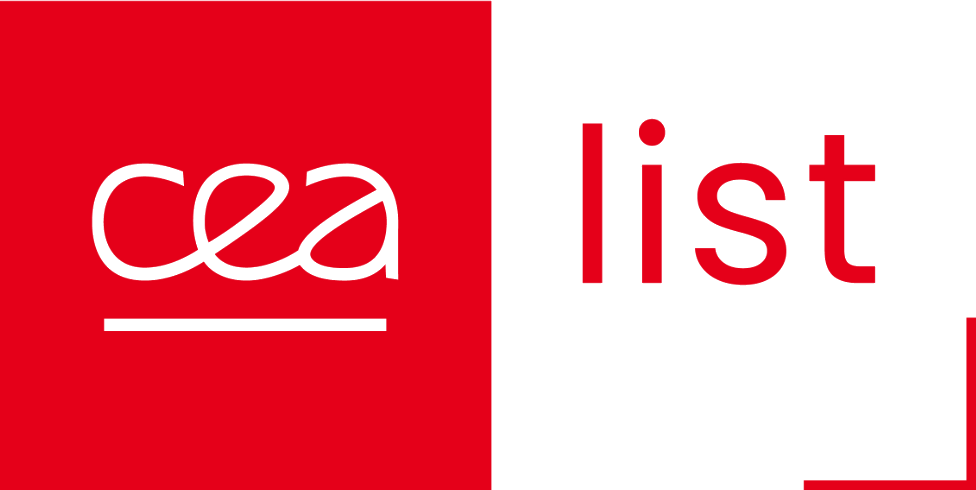

LaGSplat: a soft tab held by a robot arm

A UR robot arm moves a soft hyperelastic tab held in its gripper.
held-out video
Filmed video against the network reconstruction
Ten seconds taken from the last minute of the recording.
2D decoder · tracking window
Window that follows the gripper
filmednetwork
2D decoder · fixed camera
Full camera frame
filmednetwork
interactive simulation
Latent state and 3D decoder
A linear dynamics identified on q(t) moves the state; the 3D decoder renders it.
0.00, 0.00
linear dynamics · latent state
Latent state and arm position over time
shaded band: range covered by the recording
dataset · encoded states
Latent plane (q0, q1)
drag the dot to set the state
drag the dot
current state
latent effort Jᵀf
recorded frames
3D decoder · 85 000 Gaussians · four views
3D scene
left-drag on the tab to push it · right-drag to rotate · scroll to zoom
loading